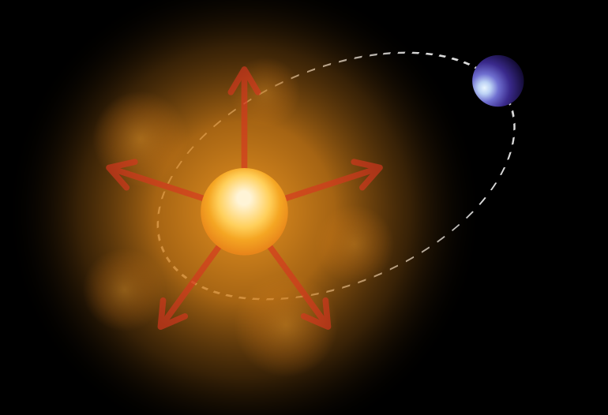
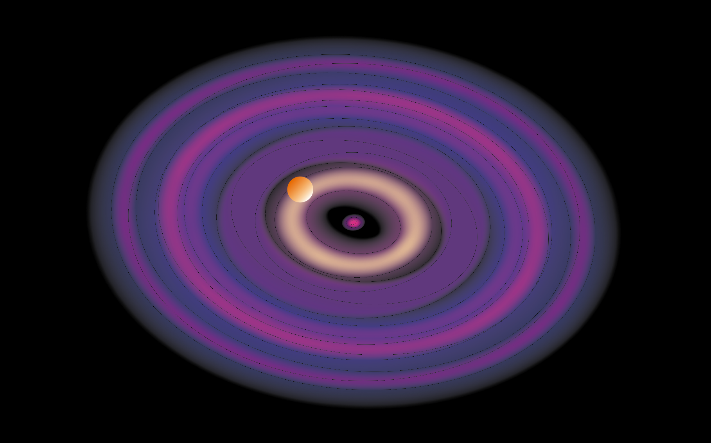
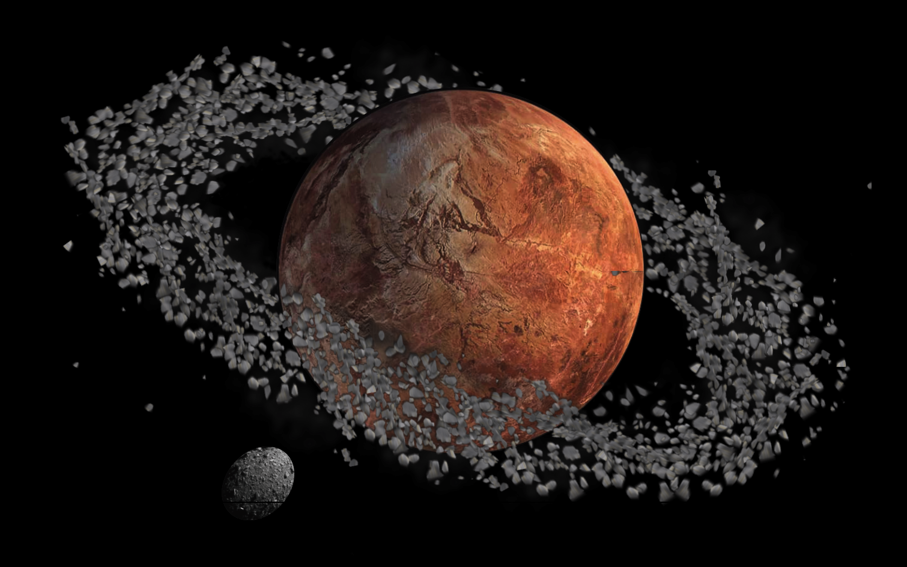
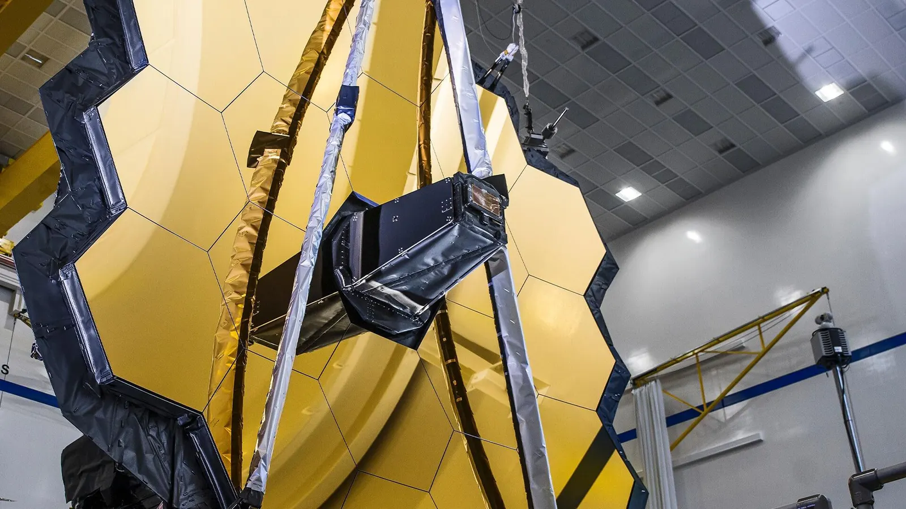
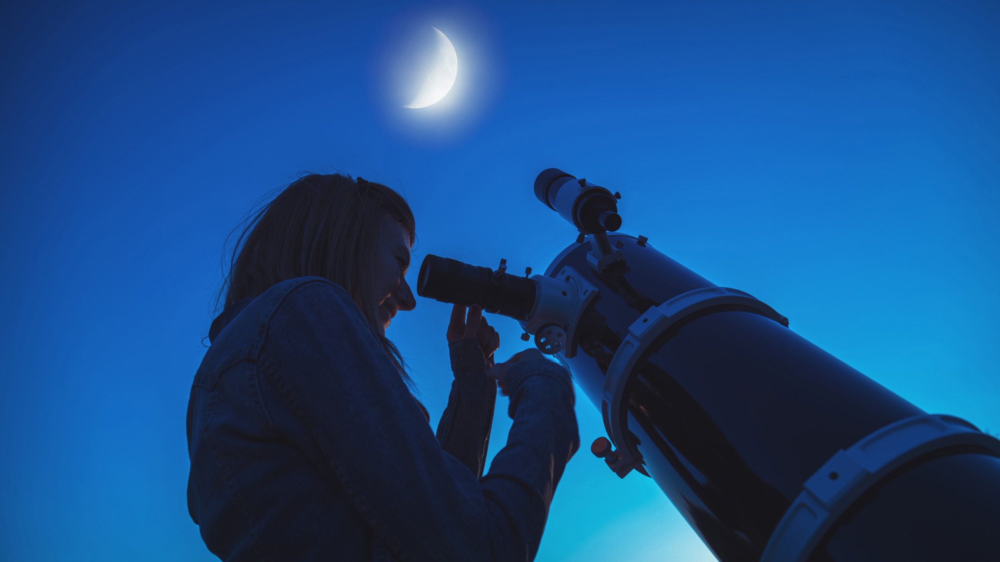

Article · 2026HU
Finding an atmosphere on a TNO beyond Pluto?
How do you know a small body has an atmosphere and why is this small object capable of its retention?
Read →I'm an astronomer at Konkoly Observatory, working in computational astrophysics. I aim to connect theory results to clear observables through papers that tell a story.

How exploding massive stars reshape their companions' orbit — forming pulsar planets, double neutron stars, and rogue planets.

What the gas disks around metal-polluted white dwarfs and the infrared Ca II emission reveal about the slow death of exoplanets.

How the rings and moons of asteroids and trans-Neptunian objects of all shapes and sizes survive radiation pressure.
As an educator I want to show people the beauty of the night sky and that science and art are really just the two sides of the same coin.
Much of this work is done as vice president of the Vega Astronomical Association.
Articles are written in Hungarian. Titles are translated for clarity. Full list or English translation available on request.
How do you know a small body has an atmosphere and why is this small object capable of its retention?
Read →Where are we, where are others? How do planets form? How do we search for life outside the Solar System?
Read →Interviews on how life could survive on the wildest known exoplanets: without a star or orbiting a pulsar.
Read →Round the table conversation with professional astronomers at the VEGA'25 amateur astronomy astrocamp.
Watch →What are the building blocks of life, and where can we find them? How rare is life, really?
Watch →How to touch the souls of professionals who never saw the night sky. Amateur astronomy @ a scientific conference.
Read →How can an moon of another planets sustain life? Can they be the first cradle for extraterrestrial beings?
Read →Telling the stories behind drawing all of the 110 Messier objects.
Watch →Spending a whole night under the summer sky with co-workers. My most awe-inspiring text.
Read →How to spend your time most wonderfully in a commintiy so strong and such in awe of the night sky.
Read →Interview with the discoverer of one of the most intriguing exoplanetary systems today.
Read →How the most massive stars end their lives - not in a bang, but a silent collapse.
Read →Talks I love to give — for clubs, observing nights, schools, companies, and friend groups. Each can be tuned for the audience and age group, and is available both in HUN and ENG. Want one of these (or something new)? Get in touch →



